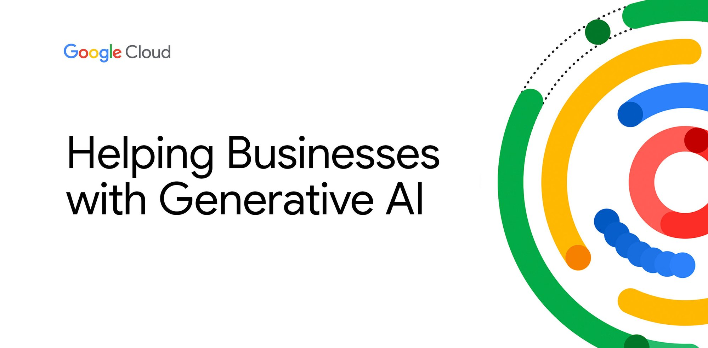
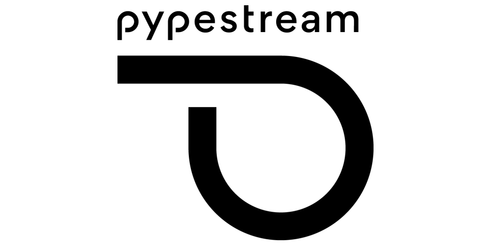

Organizamos para ti un repertorio con múltiples inteligencias artificiales para que puedas realizar lo que necesites:)
OpenAI GPT-3
GPT-3 es uno de los modelos de lenguaje más avanzados de OpenAI, capaz de realizar tareas de procesamiento de lenguaje natural, como responder preguntas, generar texto y mucho más.
IBM Watson
Watson es una plataforma de inteligencia artificial de IBM que ofrece una amplia gama de servicios para el procesamiento de lenguaje natural, visión por computadora, análisis de datos y más.
Microsoft Azure Cognitive Services
Ofrece una variedad de servicios de inteligencia artificial, incluyendo visión, lenguaje, voz y búsqueda, para desarrolladores y empresas.

Google Cloud AI
Proporciona herramientas y servicios de inteligencia artificial en la nube, incluyendo visión por computadora, procesamiento de lenguaje natural y aprendizaje automático.
Amazon Lex
Amazon Lex es un servicio de AWS que permite crear chatbots y aplicaciones de voz conversacionales con tecnología de aprendizaje profundo.
BERT
es un modelo de procesamiento de lenguaje natural, o NPL por sus siglas en inglés. El NPL es un tipo de inteligencia artificial que transforma el lenguaje humano en información entendible para computadoras para luego extraer un significado.
Wit.ai
Un servicio de procesamiento de lenguaje natural de Facebook que ayuda a construir aplicaciones con capacidades de lenguaje natural.
Botpress
Un framework de código abierto para la creación de chatbots y asistentes virtuales conversacionales.
Dialogflow
Un servicio de procesamiento de lenguaje natural de Google que permite construir interfaces conversacionales.
JasperDocs
Ofrece soluciones de automatización de documentos impulsadas por inteligencia artificial.
PandoraBots
Ofrece tecnología de chatbot y asistentes virtuales para aplicaciones y sitios web.
Replika
Un chatbot con un enfoque en el aprendizaje y la conversación significativa.
ChatterBot
Un motor de chatbot de Python que se utiliza para crear chatbots personalizados.
Cleverbot
Un chatbot con una amplia base de conocimientos y la capacidad de mantener conversaciones interactivas.

Pypestream
Ofrece soluciones de mensajería y chatbot para empresas, incluyendo atención al cliente y marketing.
Tars Chatbots
Se especializa en chatbots para generación de leads y automatización de marketing.